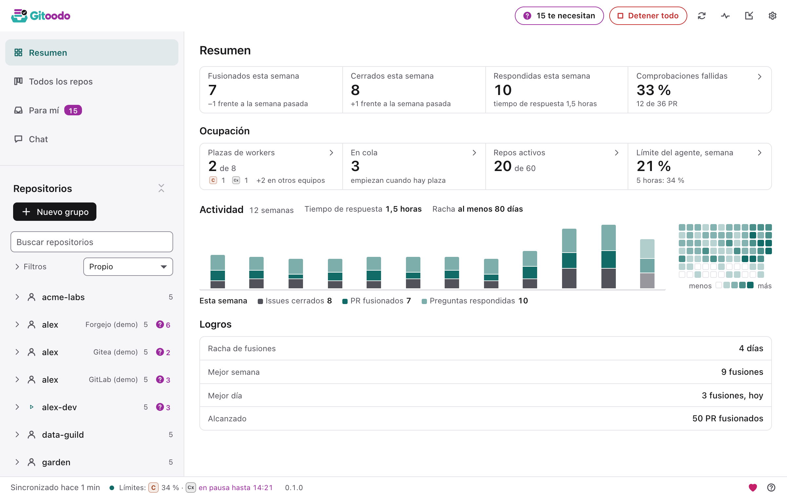

Para usuarios · Guías
Ejecutar varios agentes de programación en paralelo

Gitoodo ejecuta varios agentes de programación a la vez, hasta el límite que fijes y que aguanten tus equipos, cada uno en su propio issue y en su propio worktree. Esta página explica cómo se reparte el trabajo, cómo fijas los límites, cómo se suman otros ordenadores por SSH y cómo Gitoodo limpia lo que deja.
Un issue, un worktree, un worker#
- Por cada issue listo, el dispatcher arranca un worker en su propio worktree de git y su propia rama, como
gitoodo/42-login-fix. Los workers nunca comparten un árbol de trabajo. - Antes de que arranque un worker, el issue se reserva con un lease y recibe la etiqueta
in-progress. Nunca trabajan dos workers en el mismo issue, ni siquiera en dos equipos. - Un worker que se cuelga se reinicia en el mismo worktree; un reinicio tras una pregunta o una comprobación fallida también continúa en la misma rama.
- Los workers en curso sobreviven a una actualización o a un reinicio de la app y de sus servicios.
Cuántos a la vez#
- En total: dos workers por defecto, para que una primera configuración no empiece a trabajar en muchos repositorios a la vez. Subes el límite en los ajustes del dispatcher.
- Por equipo: cada equipo ejecuta por defecto un worker por cada dos núcleos de procesador. En Equipos de workers puedes fijar un número menor para un ordenador menos potente en el campo Workers a la vez.
- Reparto justo entre repositorios: cada repositorio con trabajo listo recibe su parte de las plazas, por turnos. Una plaza que ningún repositorio puede usar pasa a uno con más trabajo listo, así que ninguna plaza queda ociosa. Un issue con
priority:p0va primero. - Límites de uso: con Claude Code y Codex no arranca ningún worker nuevo una vez usado el 90 % de una ventana de uso (ajustable). Una sesión de Claude Code que llega a su límite espera al reinicio y luego continúa.
La vista general de Todos los repos muestra cuántas plazas de workers están ocupadas y cuántos issues esperan en la cola.
Más equipos por SSH#
Otro ordenador puede ejecutar workers por ti. Añádelo en Ajustes → Equipos de workers con su dirección SSH. Gitoodo copia allí su programa de línea de comandos por SSH, lo comprueba con su suma SHA-256 y puede configurar los agentes de programación. No se abre ningún puerto y tu token de la forja se queda en tu ordenador: el otro equipo clona y descarga con su propio acceso git a la forja y devuelve la rama terminada, y tu ordenador la sube y abre el pull request. Un equipo desconectado no recibe trabajo nuevo; sus issues en curso se liberan tras un periodo de gracia y pasan a los demás equipos. Detalles en Satélites (inglés).
Limpieza#
- Tras cada fusión y cada cinco minutos, Gitoodo elimina los worktrees y las ramas locales de los issues fusionados o cerrados.
- En tus propias copias de trabajo solo elimina sus propios worktrees y ramas
gitoodo/…. Tus ramas, tus stashes, el índice y tus cambios sin confirmar nunca se tocan. - El trabajo que se perdería, como archivos sin confirmar, nunca se elimina en silencio. Gitoodo lo guarda como rama de respaldo al cabo de una hora, o lo lista en Restos para que decidas tú.
- Las ramas remotas
gitoodo/…sin un pull request abierto se borran al cabo de 24 horas.
Todo sobre la limpieza está en Higiene del repositorio (inglés).
Empezar#
Descarga Gitoodo y sigue Primeros pasos; el primer worker se ejecuta en tu propio ordenador y más equipos pueden sumarse después.